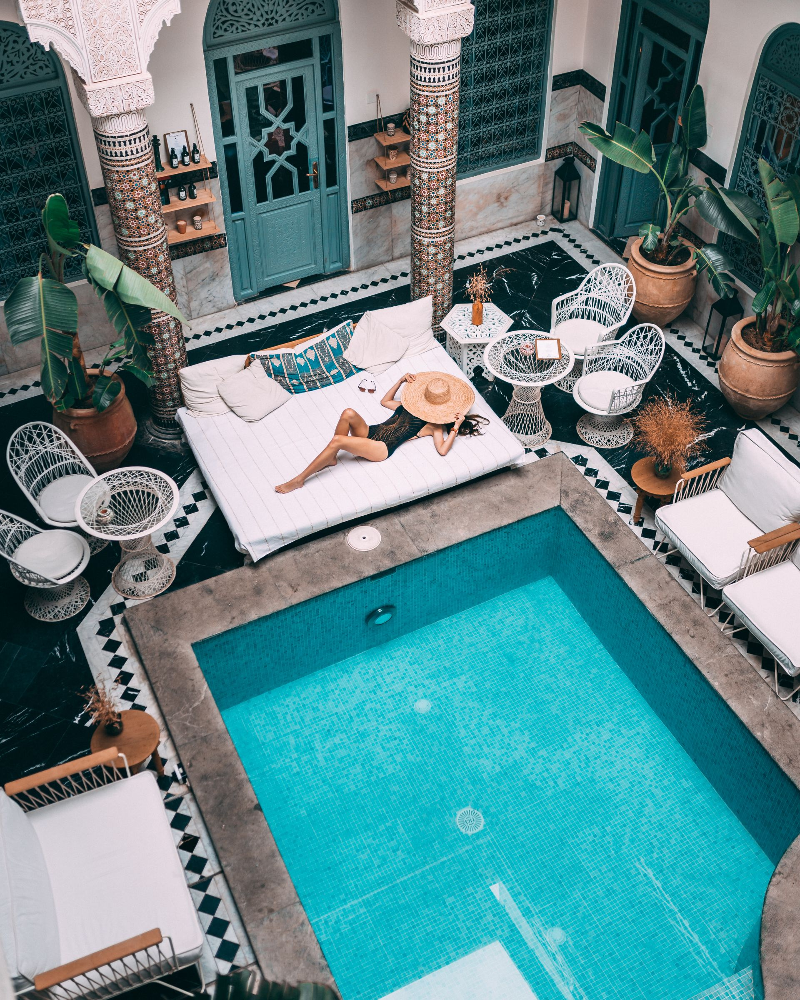
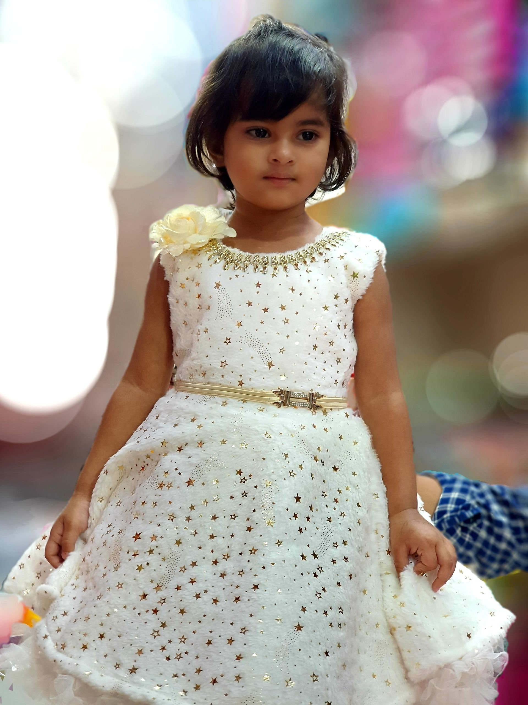

02 — Architecture Traditionnelle
Les Chefferies
Monumentales
Joyaux de l'architecture traditionnelle, les chefferies Bamiléké sont de véritables microcosmes cosmiques.
L'architecture Bamiléké est reconnaissable à ses vastes concessions royales (les chefferies) et à ses toits coniques en chaume surdimensionnés, s'élevant vers le ciel pour honorer les ancêtres.
Chaque chefferie est construite comme un microcosme cosmique, avec ses portes sculptées, ses places de danse, sa forêt sacrée et ses sanctuaires cachés. Les piliers en bois sculpté qui soutiennent les toitures racontent les généalogies et les victoires militaires du royaume.
Les Structures Sacrées
Portes, Piliers et Sanctuaires

Les Portes Sculptées
Entrées monumentales ornées de motifs symboliques protégeant le royaume.
Les Piliers Ancestraux
Piliers en bois sculpté racontant les généalogies royales.

Les Sanctuaires Cachés
Espaces sacrés réservés aux rituels et aux cérémonies secrètes.
Les Places de Danse
Cœurs pulsants où se déroulent cérémonies et célébrations.
« La maison du chef n'est pas construite en un jour, mais chaque pierre porte le nom d'un ancêtre. »
Royaumes Légendaires
Les Grandes
Chefferies
Chaque chefferie est un royaume à elle seule, avec son histoire, ses traditions et son architecture unique. Voici les plus célèbres.
Bandjoun
L'une des plus grandes chefferies Bamiléké, connue pour sonarchitecture monumentale et sa grande maison traditionnelle (Die Sheng). Symbole suprême du peuple Bandjoun.
Bafoussam
Capitale historique du pays Bamiléké. Cœur du commerce traditionnel et berceau de nombreuses chefferies. La résidence du chef est un exemple remarquable d'architecture.
Bafang
Célèbre pour ses sculptures sur bois et ses portes sculptées monumentales. Les artisans de Bafang sont reconnus dans tout le Cameroun pour leur maîtrise.
Bangoua
Réputée pour ses cérémonies traditionnelles et ses danses masquées. La chefferie de Bangoua préserve des traditions uniques liées au Kwifon.
Architecture Cosmique
Anatomie d'une
Chefferie
La chefferie n'est pas un simple village. C'est un microcosme cosmique où chaque élément a une signification spirituelle profonde.
Le Toit Conique
Le chaume relie le monde terrestre au monde des ancêtres. Plus le toit est haut, plus le chef est puissant.
La Porte Sculptée
Seuil entre le monde visible et celui des esprits. Les motifs protègent le royaume des influences maléfiques.
Les Piliers Ancestraux
Chaque pilier porte les noms des rois passés. Ils soutiennent littéralement et symboliquement la lignée royale.
La Forêt Sacrée
Espace interdit aux non-initiés. Gardienne des esprits ancestraux, elle ne peut être traversée qu'avec permission du chef.
Symbole Céleste
Le Toit Conique
Le toit conique en chaume est bien plus qu'une couverture. C'est une antenne spirituelle qui relie les vivants aux ancêtres. Sa forme pointue Symbolise l'élévation vers le ciel, vers les esprits.
Plus le toit est haut, plus le chef est puissant et respecté. Les meilleurs artisans sont choisis pour tresser le chaume selon des techniques transmises de génération en génération. Le chaume doit être changé régulièrement, et cette cérémonie de couverture est un événement majeur du royaume.
Savoir-Faire ancestral
La Construction
Traditionnelle
Les Poteaux de Raphia
Les poteaux sont taillés dans le raphia, un palmier local. Ils forment la charpente en quatre murs carrés,base de toute la structure.
Le Torchis
Les interstices sont bourrés d'herbe et recouverts de boue (laterite rouge). Cette technique isole et renforce les murs.
Le Chaume
Le toit est couvert de chaume tressé, formant un cone majestueux. Le chaume doit être sec et bien tressé pour durer.
Les Sculptures
Portes, piliers et facade sont sculptes de motifs symboliques : elephants, pantheres, mygales et geometric Ndop.